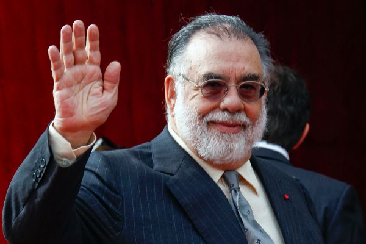

Dirección
Sergio Leone fue la primera elección de Paramount para dirigir la película, pero rechazó la oferta para dirigir la película, también del género de gánsteres, Once Upon a Time in America. A Peter Bogdanovich se le ofreció la dirección pero la rechazó ya que no estaba interesado en películas sobre la mafia. sOtros varios directores fueron considerados para el proyecto, los primeros en la lista fueron el británico Peter Yates y los estadounidenses Elia Kazan, Otto Preminger, Richard Brooks y Arthur Penn, y el franco-griego Costa-Gavras, pero cada uno de ellos declinó la invitación, por lo que Paramount estuvo a punto de abandonar el proyecto. Evans prefería que la obra fuera encabezada por un director italoamericano con el fin de que el proyecto fuese "étnico hasta la médula".
Ante la negativa de los directores entrevistados, contrataron a Francis Ford Coppola, un italo-americano de 31 años que solo había dirigido un puñado de películas aunque por sugerencia de Bart, asistente en ese momento de Evans. Coppola trabajaría por una suma y presupuesto bajos después de la mala recepción de su última película The Rain People pero que venía de recibir un premio de la Academia por co-escribir el guion de la película épica de la Segunda Guerra Mundial titulada Patton.
Según Evans, Coppola inicialmente tampoco deseaba dirigir la película porque temía glorificar a la mafia y la violencia, y reflejaría equivocadamente su herencia italiana, considerando así a la novela de Puzo como sórdida y sensacionalista, describiéndola como "cosas bastante baratas". Pero el joven Coppola aceptó meterse en el proyecto a fin de lograr dinero suficiente para poner en marcha otros proyectos, los de su productora independiente, Zoetrope.
Francis Ford Coppola (Detroit, 7 de abril de 1939) es un guionista, productor y director de cine estadounidense. Es una de las figuras más destacadas del Nuevo Hollywood que tuvo lugar en la década de 1970, junto a cineastas como Martin Scorsese, Steven Spielberg, Brian de Palma y George Lucas, entre otros.
Ha sido ganador de cinco premios Óscar, tres de ellos como guionista (por Patton, El padrino y El padrino parte II), uno como director (por El padrino parte II) y uno como productor (también por El padrino Parte II), siendo el segundo cineasta que ha recibido tres estatuillas por una misma película, tras Billy Wilder, y el primero en ganarlo por una secuela. Así mismo, ha ganado dos Palmas de Oro de Cannes, por La conversación y Apocalypse Now, siendo uno de los pocos cineastas que ha ganado en dos ocasiones el máximo premio del festival de cine más importante del mundo. Fue también ganador de la Concha de Oro del Festival de San Sebastián por Llueve sobre mi corazón, entre otros muchos premios internacionales.